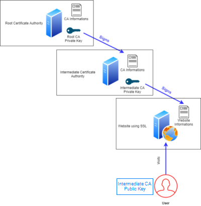

Secure Sockets Layer (SSL)
SSL
SSL is an approach that use the format X.509 as digital certificate and is based on the model of trust relationship: “Trust Chain”
Root CA validate Intermediate CA that validate the Website using SSL
When an user accesses the Website using SSL the user can confirm the CA’s digital signature(private key) using using the CA’s public key. In this way is possible confirm that the information has not been altered since it was signed.
SSL has two main goals:
Authenticity → achieved by the user verifying the validity of the certificate (validating the digital signature with the correspondent public key)
Confidentiality → achieved using symmetric encryption, established using a shared key known only by the two parties involved to encrypt messages.
The shared is encrypted by the client with the public key from the Website, and sent to the server. In this way only the Website can decrypt the shared key using its private key

SSL handshake